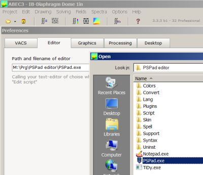

The Preference Dialog opens via menu Options/Preferences.
Preferences are settings for all Projects.
This page gives information where to download the module for outputting the results of spectral observations, see chapter VACS and VacsViewer.

This page lets you provide a short-cut to the Editor you use for editing scripts. For convenience click on the button with three dots at the side of the edit-field. A File-Dialog opens. Navigate to the folder, where the executable (*.exe) of the editor is hosted. Select the executable-file and issue Open.This page preference the 3D-graphic.
Enable Light enables a directive light.
Format for Copy to Clipboard sets the picture-format, if you issue menu Drawing/Copy as Picture, i.e. if you place the current drawing as a bitmap to the clipboard.
Default Rotation of View. This setting arranges the default view, when a project is opened or setup new. It also sets the polar rotation-axis for Euler-Mode.
Default Rotation Mode starts your Project with Euler or Arc-Ball rotation, respectively.
Here you can set-up the solving- and observation-threads.
Number of Thread limits the number of CPUs, which are used for solving and calculations. Typically, and by default, ABEC makes use of all available CPUs for parallel-processing, which, of course, yields results in shortest time. However, the drawback is, that each thread consumes memory. For large models and many used CPUs, this might cause a Memory Overflow error message. In this case, reducing the number of processors may help.
Result Files are very convenient however they need disk-space. Here you can disable this feature.
ABEC treats the Non-Uniqueness Problem in order to avoid certain arte-facts in the exterior domain at high frequencies.
Specify here the default method, which gets applied at solving-stage of any exterior or mixed interior-exterior domain.
It is possible to over-write this setting with the help of parameter NUC= of section Control_Solver.
None disables the NUC-method
Dual Surface enables with the Dual Surface Method (see at NUC=)